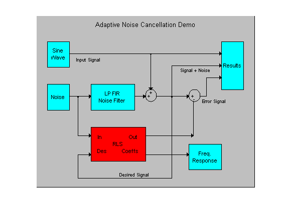
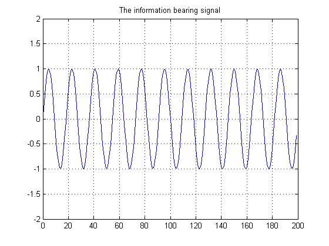
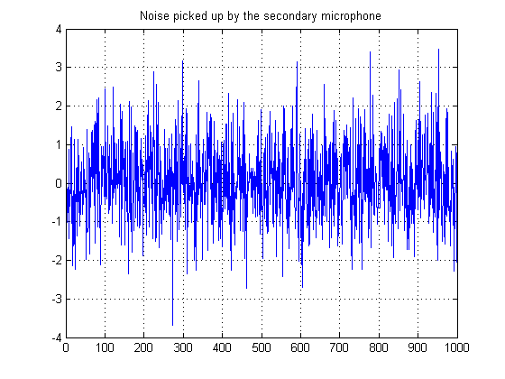
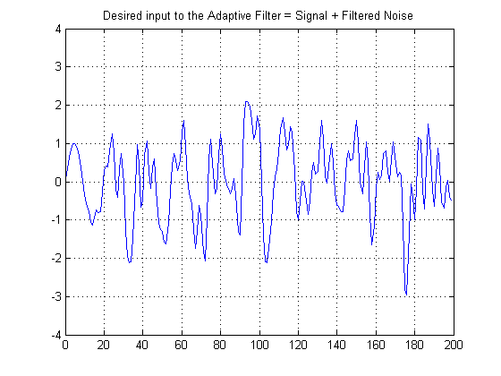
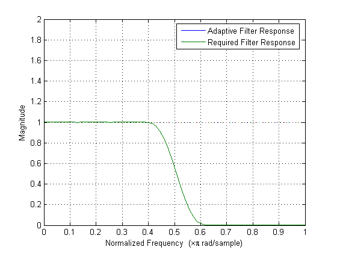
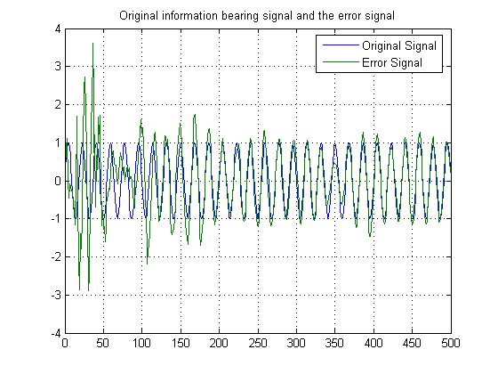

This demo illustrates the ability of the RLS filter to extract useful information from a noisy signal. The information bearing signal is a sine wave that is corrupted by additive white gaussian noise.
The adaptive noise cancellation system assumes the use of two microphones. A primary microphone picks up the noisy input signal, while a secondary microphone receives noise that is uncorrelated to the information bearing signal, but is correlated to the noise picked up by the primary microphone.
Note: This demo is equivalent to the Simulink model 'rlsdemo' provided in the Signal Processing Blockset.
Reference: S.Haykin, "Adaptive Filter Theory", 3rd Edition, Prentice Hall, N.J., 1996.
The model illustrates the ability of the Adaptive RLS filter to extract useful information from a noisy signal.
priv_drawrlsdemo
axis off
 The information bearing signal is a sine wave of 0.055 cycles/sample.
signal = sin(2*pi*0.055*[0:1000-1]');
plot(0:199,signal(1:200));
grid; axis([0 200 -2 2]);
title('The information bearing signal');
 The noise picked up by the secondary microphone is the input for the RLS adaptive filter. The noise that corrupts the sine wave is a lowpass filtered version of (correlated to) this noise. The sum of the filtered noise and the information bearing signal is the desired signal for the adaptive filter.
nvar = 1.0; % Noise variance noise = randn(1000,1)*nvar; % White noise plot(0:999,noise); title('Noise picked up by the secondary microphone'); grid; axis([0 1000 -4 4]);
The noise corrupting the information bearing signal is a filtered version of 'noise':
nfilt = fir1(31,0.5); % 31st order Low pass FIR filter fnoise = filter(nfilt,1,noise); % Filtering the noise
"Desired signal" for the adaptive filter (sine wave + filtered noise):
d = signal+fnoise;
plot(0:199,d(1:200));
grid; axis([0 200 -4 4]);
title('Desired input to the Adaptive Filter = Signal + Filtered Noise');
 Set and initialize RLS adaptive filter parameters and values:
M = 32; % Filter order lam = 1; % Exponential weighting factor delta = 0.1; % Initial input covariance estimate w0 = zeros(M,1); % Initial tap weight vector P0 = (1/delta)*eye(M,M); % Initial setting for the P matrix Zi = zeros(M-1,1); % FIR filter initial states
Running the RLS adaptive filter for 1000 iterations. The plot shows the convergence of the adaptive filter response to the response of the FIR filter.
Hadapt = adaptfilt.rls(M,lam,P0,w0,Zi); Hadapt.ResetBeforeFiltering = 'off'; [y,e] = filter(Hadapt,noise,d); H = abs(freqz(Hadapt,1,64)); H1 = abs(freqz(nfilt,1,64)); wf = linspace(0,1,64); plot(wf,H,wf,H1); xlabel('Normalized Frequency (\times\pi rad/sample)'); ylabel('Magnitude'); legend('Adaptive Filter Response','Required Filter Response'); grid; axis([0 1 0 2]);
As the adaptive filter converges, the filtered noise should be completly subtracted from the "signal + noise" signal and the error signal 'e' should contain only the original signal.
plot(0:499,signal(1:500),0:499,e(1:500)); grid; axis([0 500 -4 4]); title('Original information bearing signal and the error signal'); legend('Original Signal','Error Signal');